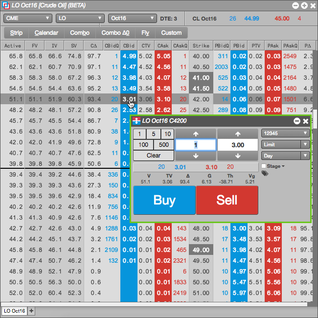
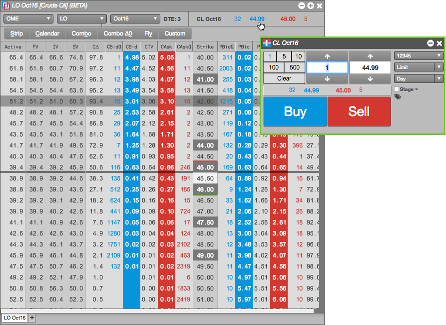

You can submit an order for a call or put, as well as an order for the underlying futures contract.
To submit an order in the Options Chain:
For options, click the bid or ask premium price or quantity for the call or put to open a floating order entry widget.

For futures, click the bid or ask price or quantity for the futures contract at the top of the Options Chain to open a floating order entry widget.

Enter a price or quantity and select an account, order type, or TIF as needed. In the Order Ticket, click Buy or Sell to submit the order. In MD Trader®, click the Bid or Ask column at the desired price level.